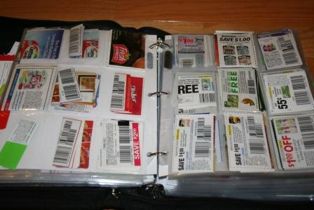

Organization and Couponing Lingo
How to Organize your coupons
One of the most important things about successful couponging, especially if you're going to be using paper coupons (either from the Sunday newspaper or online printable coupons), is how you organize them. My personal go-to is a 3 ring binder, filled with baseball card sleeves and tabbed divider pages labeled and organized by product category. Some people use a small accordion file/wallet, ideal for small amounts of coupons or if you're looking for something convienent/portable. Anothervery important thing to remember is purging your coupons to get rid of expired ones, typically coupons are valid for up to 2-4 weeks.

Gathering Supplies
- Coupon inserts and/or printed coupons from the interent
- Smart phone, tablet or laptop for digital coupons
- Sciccors or paper cutter
- Binder or accordion file
- Dividers and Tabs
- Pen and/or pencil
Know the Lingo of Couponing
Sometimes trying to get started in couponing is like learning a foreign language. Trying to follow a breakdown as a newbie is like seeing hieroglyphics for the first time without the Rosetta Stone. I've compiled a list of some of the most commonly used couponing terms for you.
- Coupon: a coupon is something that manufacturers and stores create to give you a discount on specific items. Sometimes the coupons can be for a dollar amount, (i.e. $0.25, $0.50, $0.75, $1.00, etc.), sometimes it is for a percentage off the cost of the item (i.e 5%, 10%, 20%, 25%, 50% etc.). There are 2 different forms a coupon will come in, there's paper coupons, which is exactly what is sounds like...a piece of paper that you surrendor to the cashier when checking out. The second form is a digital coupon which you clip to your store account via the stores app or website and is redeemed by scanning your loyalty card or entering your phone number during the checkout process.
- Manufacturer Coupon: coupons distributed by a manufacturer (company) that can be used at any store that accepts coupons. Stores will send these coupons back to the manufacturer after you've redeemed them to get reimbursed for the dollar amount of the coupon so that the store isn't technically loosing any money.
- Store coupon: coupons that are only to be used at that specific store. i.e. Publix has an extra savings flyer that can be found at the entrance of their store. You can typically only use those coupons at whatever store is on them.
- Catalina: coupon that prints out at the register after you complete your purchase. Pay attention to the fine print on these as sometimes they are manufacturer coupons and sometimes they are store coupons.
- Insert: you can find a coupon insert (small booklet of manufacturer coupons) in the Sunday newspaper.
- Stacking coupons: some stores allow you to "stack" (using both store and manufacturer coupons on a single item.
- Blinkie: coupons you find throughout a store typically in a small box like dispenser attached to a shelf.
- Peelies: coupons found stuck onto products stocked on a stores shelf. The coupon will be for that product it's attached to.
- Internet printable coupon or IP: A coupon you can find online and print to use in store. An example of where you could get printable coupons is coupons.com. Typically you're limited to 1 or 2 prints of the same coupon but are allowed to print all the coupons available on the webiste. Also, make sure to check your stores policy, CVS for example will only accept IP's that are printed in color, while publix will accept them printed in black and white.
- Expiration Date or EXP: The date the coupon expires, you can use the coupon on the date of expiration, but not after. The reason for this, the store you're redeeming the coupon at, will not get paid by the manufacturer for the coupon.
- Mail in rebate or MIR: A post purchase discount. Typically there will be a form you fill out and submit to a company, along with a copy of your receipt as proof of purchase, and sometimes the barcode from the package. Then you'll recieve a check or gift card in the mail, normally within 2-3 weeks of the company receiving your rebate form and proof of purchase.
- Out of Pocket or OOP: Out of pocket refers to the amount of money you spend, what you hand to the cashier or is charged to your card at checkout. You normally see this phrase or abbreviation when people post their deal breakdownss on social media for you to follow.
- Doubling or Tripling Coupons: This means the stores register will automatically double or triple the dollar amount of the coupon. Each store has a different policy. Unfortunately most stores no longer double or triple coupons.
- Do Not Double or DND:This means that the dollar amount of the coupon will not double, it will be written directly on the coupon, most of the time in bold print. Some stores will double a coupon upto a certain dollar amount. For example, if a coupon is for $0.50 off 1 item, the register will automatically doublt it to be $1.00 off that item. Unfortunately not a lot of stores do this anymore. But I will go further indepth about store policys, and where to find them here soon.
- MoneyMaker or MM: You will find this phrase used very often in breakdowns. It refers to when you actually make money off of buying an item. For example: you buy an item for $1.99, you have a $1.00 off 1 coupon, bringing your total down to $0.99 and then there is an offer on a rebate app for $1.50 back for that specific item. So now your total oop is now $0.00 and you actually earned $0.51 for buying that item. That is a MoneyMaker. Most MoneyMakers involce rebate apps, I'll go further indepth about rebate apps in another section.
- Competitor Coupon: A paper store coupon, that you're able to use at a different store. For example, Dollar General has a paper coupon that prints at the bottom of their receipts for $5 off $25 valid only on Saturdays. You can use that coupon, at some FoodLions! Always call the specific location you're going to be shopping at beforehand to confirm they allow competitors coupons.
- Overages: similar to MM, if you have a larger dollar amount in coupons than the dollar amount the products you have add up to, the difference is call an overage. Stores are not allowed to pay you for items, the easiest way to avoid this is to grab a small or inexpensive item. For example, you have $10.50 worth of coupons, but your products eqaual $9.50 because one of those items happens to be part of a BOGO sale, you should grab a $1.25 pack of gum or something like that at the register to avoid any overages.
There's a lot more vocabulary I could list than what I have. But the ones I've listed are some the most important and most common ones out of all of them. And more then enough to get you started. Another very important thing about couponing, is reading the fine print on a coupon. You can't just walk in a store, grab 10 of the same items, and use 10 coupons. Every coupon will have fine print on it. In that fine print you will find the stipulations for that coupon. For example, the coupon may limit you to 2 like coupons for in the same transaction. Which means, you're allowed to use 2 of the same exact coupon on no more than 2 of the same items per transaction. You may be able to purchase more of that item and use more of that coupon if you do seperate transactions (you'd have to check your stores coupon policy which we will get into on the next page). Or 4 like coupons per household per day. Which means you can use no more than 4 of the same coupon per day, not per transaction. Something else to keep in mind when it comes to the fine print, is the product specifications. For example, you have a coupon for $1.00 off 1 box of bounce dryer sheets, 160 count or larger, fresh laundry scent. You cannot grab the 80 count of lavender scent and expect to be able to use the coupon, because you don't have the correct item for that coupon. Some stores, require you to get the exact product(s) as pictured on the coupon if there isn't a specific scent or flavor listed on the coupon. So it is very important to read all the fine print on the coupon and be specific when writing your couponing shopping list and/or breakdown.